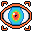
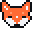
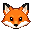
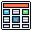
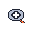
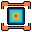

NaSight
Studio
NaSuite • Visual Saliency & Heatmaps

by NachoFari
ES

Zorro Clásico

Póster Ejemplo
Subir Mi Póster
Descargar con Mapa de Calor
100%

Split A/B

Dibujar AOI
Limpiar
3.0 s
Simulación mirada de congreso...
↔
Frío (0%)
Foco (100%)
Arrastra tu póster aquí o presiona
Ctrl + V
para pegar una captura
Temas Visuales • Ecosistema NaSuite
Selecciona cualquiera de los 20 temas y mascotas Pixel Art 32×32 de NaTex Studio
×